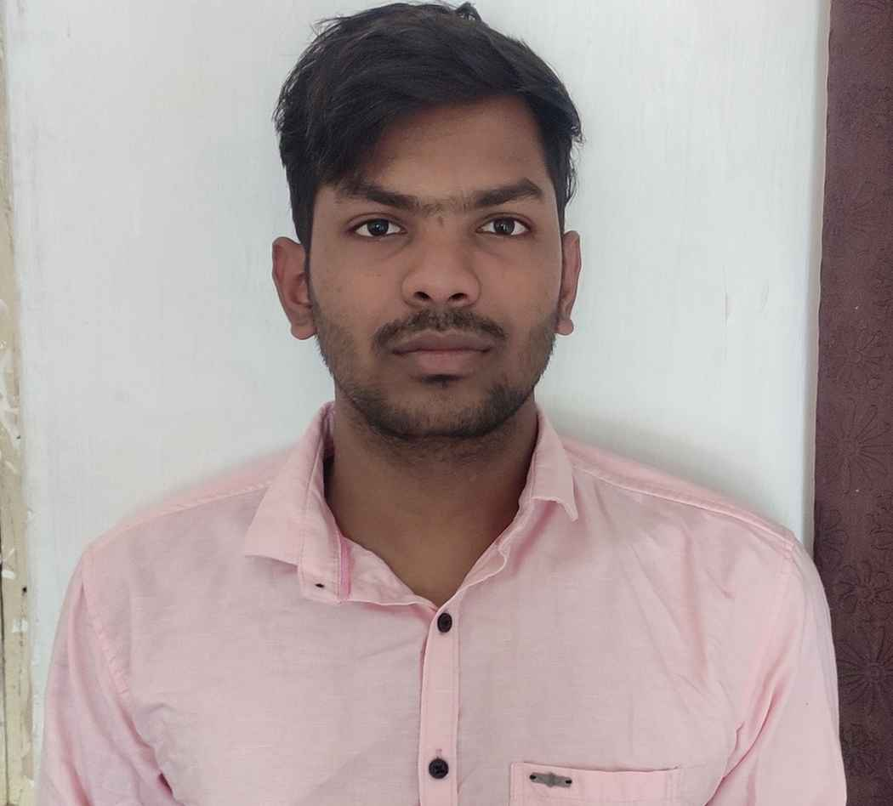

Puneet Das
Summary
Highly motivated Programmatic Ad Operations Associate with a strong foundation in digital marketing seeking to pivot into a web development role. Proficient in HTML with a passion for creating and optimizing web experiences. Eager to leverage my analytical skills, attention to detail, and dedication to results in a dynamic web development environment. Committed to expanding my skill set and contributing to innovative web projects.
Education
-
Institute of Technical Education and Research, Bhubaneswar
BTECH CGPA: 9.06
-
Amresh Sharma Public School
12th Percentage: 58.8%
-
St. Xaviers Public School, Korba
10th Percentage: 76%
Work Experience
-
Mediamint
May2022 - Current
Ad Ops Associate
-
Proficient in programmatic ad operations, including campaign setup, trafficking, optimization, and troubleshooting across various demand-side platforms (DSPs)
-
Effective communicator and collaborator, experienced in working cross-functionally with internal teams and clients.
- knowledge of ad tech ecosystem, ad exchanges, ad servers, data management platforms (DMPs), and other relevant advertising technologies.
-
Excellent understanding of digital advertising metrics, KPIs, and industry best practices.
- QA client Setup and marking errors and providing feedback based on QA.
- Detail-oriented and organized, with the ability to handle multiple projects and meet deadlines in a fast-paced environment.
- Making Campaign Changes Based on campaign Performance and as per KPI.
Providing screenshot of Creatives on Different Websites As per Requirement.
Training New Interns about the Process and Tools.
Skills
- HTML5
- The Trade Desk
- Dv360
Certificates
- TTD Edge Academy certified
Link:https://www.credly.com/badges/75285b11-0c82-4f72-8e75-9c93780dd90f/linked_in_profile
-
Display & Video 360 certification
https://api.accredible.com/v1/frontend/credential_website_embed_image/certificate/77187206
-
Responsive Web Design
https://freecodecamp.org/certification/fcc9a0c4988-1724-45dc-9296-0051ef91947f/responsive-web-design
Awards
- Rising Star Award Q2 2022
Within few months of joining Mediamint, I was recognised as a rising star award winner for my quick learning/adaptability skills and for taking additional responsibility, completing work on time and with no/minimal errors.
Contact
Hobbies